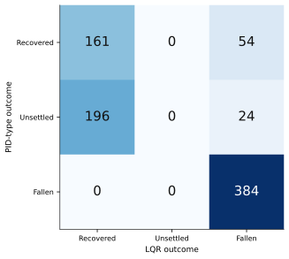
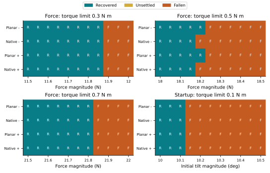

MICHAEL AGBO / INTEGRATED MANUSCRIPT, VERSION 2
Payload-aware gain redesign shifts the fall boundary of a torque-limited balancing robot: what fixed-force fall counts miss, in two simulators
Abstract
Whether adapting a balancing controller to a carried load prevents falls depends on how the question is measured. We study a torque-limited two-wheeled balancing robot with a rigid payload, controlled by a fixed linear quadratic regulator (LQR) and by a payload-aware LQR with the same cost weights, in a planar ideal-rolling model and a separately built MuJoCo wheel-contact model that shares the controller, sensing, actuator and disturbance models. On fixed grids of tilts and pushes with exact state feedback, the redesign changes the fall outcome in 2 of 234 planar and 2 of 54 contact-model conditions. With noisy attitude measurements and identical noise seeds, it reduces falls from 508 to 334 of 1,620 paired trials in the planar model and from 511 to 343 in the contact model, meeting a direction criterion fixed before the contact runs. A post hoc measurement of each gain's exact-feedback fall boundary reconciles the two results. The redesign raises the push the robot survives by 4% to 9% at a 0.26 m mounting height and 10% to 21% at 0.36 m, and changes it by at most 1% at 0.14 m, in both models. The grids rarely place a force between the two boundaries; the noisy trials push close to them, and each gain's noisy fall count follows its distance to its own boundary (rank correlation -0.98 to -0.88). Noise reveals the boundary shift rather than adding a separate benefit. The same measure explains the two cells in which the simulators' fall labels disagree: 0.0002 kg m² of chassis pitch inertia present in only one model lowers its critical push by 44.6 mN, leaving a net gap of 38.5 mN (0.2%). All parameters are illustrative and no hardware was used. We recommend reporting controller and simulator comparisons as boundary shifts and give a staged hardware plan that measures the predicted shift directly.
Keywords: wheeled inverted pendulum; payload; gain scheduling; linear quadratic regulation; fall boundary; measurement noise; torque saturation; simulator cross-validation
1 Introduction
A two-wheeled balancing robot that carries a load changes its mass, centre of mass and pitch inertia together. A controller designed for the unloaded robot may still balance it, and a controller redesigned for the load may or may not do better. This paper asks how much such a redesign changes the outcome that matters most, a fall, and how that change should be measured so that the answer does not depend on incidental choices.
Three evaluation choices can each reverse a conclusion. The first is the outcome definition: staying upright and returning to a prescribed position are different objectives, and a controller ordering can flip between them. The second is the test itself: a fall label at a fixed force says only on which side of the fall boundary that force lies, so a grid of forces can miss a shift in the boundary that a different grid, or noisy trials near the boundary, would reveal. The third is the simulator: a result obtained under one set of modelling assumptions may be a property of those assumptions.
We address all three on one explicit model. A baseline study fixes how outcomes are defined and reported. A sensing study separates measurement noise from delay. A payload study compares a fixed LQR with a payload-aware LQR of identical cost weights on reserved loads, with paired noise seeds. The plant is then rebuilt as a free-body wheel-contact model in MuJoCo and the comparison is repeated there: away from failure, at the fall boundary, with loads under ideal sensing and, new in this version, with loads under noisy sensing, together with an exact-feedback control and a direct measurement of each gain's fall boundary. Where the two simulators disagree, the cause is identified by intervention instead of being tuned away.
The contribution is one claim, stated in Section 7 with its evidence and limits: exact-load LQR redesign shifts the fall boundary, by up to about a fifth at the higher mounting heights, and fall counts at fixed forces, with or without noise, are an indirect and grid-dependent view of that shift. Two methodological results support the way it is measured. The simulators' fall boundaries differ by about 0.2% in critical force, a difference attributed mostly to a single inertia term. And the outcome definition alone can reverse the ordering of two controllers, which is why three outcomes are reported throughout. No new controller, controller ranking or hardware result is claimed; Section 8 specifies the experiments that would test the claim on a robot.
2 Related work and positioning
Comparisons of PID and LQR balancing controllers are established. Lau et al. [1] report hardware comparisons and a hybrid controller, including a tradeoff between tilt regulation and translational motion. Laddach et al. [2] derive PID-type settings from linear-quadratic design and validate them in simulation. A further PID-versus-LQR comparison is therefore not a contribution in itself; our baseline comparison is used only to motivate how outcomes are defined.
More complete wheeled inverted pendulum research treats constraints, model fidelity and physical validation. Albert et al. [3] combine constrained trajectory generation with feedback and report experiments. Measurement and communication effects are an active topic: Music et al. [4] evaluate networked balancing with explicit delay management. We do not propose a delay-compensation method; our estimator deliberately leaves delay uncompensated so that its effect can be measured.
Payload adaptation is likewise an existing direction. Baek et al. [5] estimate load-induced equilibrium changes and validate a physical wheeled pendulum. Song et al. [6] develop a gain-scheduled controller-observer framework for configuration and payload variation in simulation. Scheduling LQR gains on a known load, as done here, is a textbook construction and is not claimed as a new controller.
What this manuscript adds is narrower: a paired, seed-matched measurement of how such a redesign moves the fall boundary, how fixed-force fall counts with and without noise register that movement, and a repetition in a second plant model, with the disagreements between the two models diagnosed rather than tuned away. The literature search was targeted, not systematic. We do not claim that the effect of load-matched gains on the recoverable region is previously unreported; we claim that it holds, with stated limits, for the model and conditions specified here, and that the way it is measured decides whether it is seen.
3 Plants, payload and measurements
Planar plant. The state is s = [x, v, θ, ω]: axle displacement, horizontal velocity, forward body tilt from upright and tilt rate. The control torque τ is the sum of the two wheel-motor torques; the body receives the opposite reaction. A horizontal disturbance force F acts at the body centre of mass.
a=M+m+2I_w/r^2,\qquad b(\theta)=ml\cos\theta,\qquad d=I+ml^2
a\ddot{x}+b(\theta)\ddot{\theta}=\tau/r-b_xv+ml\sin\theta\,\omega^2+F
b(\theta)\ddot{x}+d\ddot{\theta}=mgl\sin\theta-\tau-b_\theta\omega+Fl\cos\theta
M is the translating base mass, m the body mass, l its centre-of-mass distance from the axle, I its pitch inertia about that centre, I_w the spin inertia of each wheel and r the wheel radius (Table 1); b_x and b_θ are the translation and rotation drag coefficients. The equations follow from rigid-body energies with ideal rolling: traction is unlimited and the wheels never slip. The controller is evaluated every 5 ms and its saturated command is held over the interval; the plant is integrated with fourth-order Runge-Kutta.
| Quantity | Value | Unit |
|---|---|---|
| Translating base mass M | 0.35 | kg |
| Body mass m | 1.20 | kg |
| Axle to body centre l | 0.18 | m |
| Body pitch inertia I | 0.012 | kg m² |
| Each wheel spin inertia I_w | 0.00012 | kg m² |
| Wheel radius r | 0.045 | m |
| Translation / rotation drag | 0.08 / 0.002 | N s/m, N m s/rad |
| Control interval | 0.005 | s |
| Total motor torque limit | 0.1 to 1.0 | N m |
| Declared fall angle | 45 | deg |
Rigid payload. A cuboid of mass m_p is fixed on the body centreline with its centre a distance h from the axle. Body mass, centre distance and pitch inertia change together:
M_b=m+m_p,\qquad L=\frac{ml+m_ph}{m+m_p},\qquad I_b=I+m(l-L)^2+m_p(h-L)^2+\frac{m_p(w^2+c^2)}{12}
with fore-aft width w = 0.08 m and thickness c = 0.06 m along the body. The base, wheels, gravity and drag are unchanged, and the payload is present from the start of a run. The disturbance acts at the combined centre of mass, so its moment arm moves with the load. This is a modelling convention, not a fixed attachment point; Section 8 treats the difference as a required step before hardware testing.
Measurements. At each 5 ms sample, independent zero-mean Gaussian noise is added to the true tilt and tilt rate; position and speed are noise-free. The whole four-component packet may be delayed by a whole number of samples. The controller acts either on the delivered packet (direct) or on a two-state Kalman estimate of tilt and rate [8] that assumes constant rate between samples, a per-interval angular-acceleration standard deviation of 50 rad/s² and measurement variances equal to the configured noise. The filter estimates the state at the packet timestamp and does not predict across the delay. Noise comes from a seeded 32-bit generator, so every controller, load and simulator can be given exactly the same noise sequence. In the measurement model below, σ_θ and σ_ω are the tilt and rate noise standard deviations, n_1 and n_2 are independent unit normal draws, D is the delay in samples, ŝ_k is the state estimate at sample k and K is the gain.
y_k=\left[x,\;v,\;\theta+\sigma_\theta n_1,\;\omega+\sigma_\omega n_2\right]_{k-D},\qquad \tau_k=\mathrm{sat}\left(-K\,\hat{s}_k\right)
Wheel-contact plant. A second plant model is built separately in MuJoCo [7]: a six-degree-of-freedom base, two hinged wheels and soft frictional contact with a plane. It retains the body mass, centre height, pitch inertia, wheel radius and wheel spin inertia; the 0.35 kg base is split into a 0.11 kg chassis and two 0.12 kg wheels. The payload is a separate welded body with matched combined centre of mass and pitch inertia. Three of its assumptions have no planar counterpart and are examined in Section 6.5: the chassis carries 0.0002 kg m² of pitch inertia in addition to the body, the wheels start 0.2 mm above their resting height with no settling period, and contact is compliant (5 ms time constant) with a sliding friction coefficient of 1.
A third, reduced MuJoCo model imposes ideal rolling through a slide and a hinge. It reproduces the planar equations: 48 unloaded and 480 loaded acceleration checks agree within 1 × 10⁻⁹, and 35 trajectories match within 1 × 10⁻⁷ in every state component. This separates implementation errors from modelling differences: where the planar and contact plants disagree, the cause is an assumption, not a transcription mistake.
4 Controllers
Fixed LQR. The plant is linearised at the upright zero state and the continuous algebraic Riccati equation is solved with state cost Q = diag(12, 2, 120, 2) and input cost R = 1. The resulting gain, K = [-3.46410, -4.06357, -15.96706, -2.35048], is applied to the state estimate and clipped to the torque limit. Local sampled-data stability at 200 Hz is verified; it does not certify recovery under saturation, noise or delay. Changing the torque limit does not redesign the gain.
Payload-aware LQR. For an assumed payload the loaded plant is linearised and the same Riccati problem is solved with the same Q and R. The gain is chosen before a run and held throughout; there is no online estimator. The exact variant is told the true load. Four error variants are told a mass 20% too low or high, or a height 4 cm too low or high; the true load always drives the physics. The tuning budget is zero: no gain, weight, filter covariance or threshold was selected using test outcomes.
PID-type baseline. The original comparison uses a manually tuned law with proportional and derivative tilt feedback, an integral of tilt, and position and velocity feedback:
\tau_{\rm raw}=14\theta+2\omega+2x+3v+0.4z,\qquad |z|\leq 0.25\ {\rm rad\,s}
where z is the integral of tilt, with conditional integration against windup. It is not a tilt-only PID and was not tuned to a budget matched with LQR. It appears here only in Section 6.1.
5 Outcomes, protocols and evidence inventory
Every run lasts at most 10 s with 200 Hz control. A horizontal force pulse acts from 2.0 to 2.2 s. Each run receives one of three labels. A fall is declared when the absolute true tilt reaches 45 degrees at a control endpoint (the contact plant also checks roll). Recovery requires the final trajectory to stay within 1 degree of upright, 0.03 m of the start position and 0.03 m/s for at least one second. A run that neither falls nor recovers is upright but unsettled. Recovery is a finite-horizon operational criterion, not a stability proof.
Comparisons are paired. Two controllers are always given the same true plant, initial state, force, torque limit and, where noise is present, the same noise seed. Paired transitions (a fall prevented, a fall introduced) are reported alongside marginal counts, because a net change can hide regressions.
| Study | Plant | Runs | Question |
|---|---|---|---|
| Baseline, PID-type vs LQR | Planar | 1,638 | Does the outcome definition change the ordering? |
| Sensing and delay | Planar | 8,340 | What do noise, delay and filtering change? |
| Payload, frozen gains | Planar | 4,176 | How does load change fixed-gain outcomes? |
| Fixed vs payload-aware LQR | Planar | 11,016 | Does redesign change falls? (reserved conditions) |
| Nominal cross-check | Planar, reduced, contact | 150 | Do the simulators agree away from failure? |
| Fall boundary and zoom | Planar, contact | 708 | Do they agree at the fall boundary? |
| Loaded, ideal sensing | Planar, reduced, contact | 340 | Is the ideal-sensing grid result reproduced? |
| Boundary diagnostics (new) | Planar, contact | 488 | Why do two boundary cells disagree? |
| Boundary consistency (new, post hoc) | Planar, contact | 168 | Does the explanation hold at other torque limits? |
| Loaded, noisy sensing (new) | Planar, contact | 9,720 | Does the noisy fall reduction persist? |
| Exact-feedback control (new, post hoc) | Planar, contact | 108 | Does the redesign change falls without noise at the same conditions? |
| Exact-feedback boundary (new, post hoc) | Planar, contact | 2,988 | How far does the redesign move each fall boundary? |
Table 2 lists every study. Protocols for the payload-aware comparison, both cross-simulator studies, the boundary diagnostics and the noisy contact repeat were written to disk before the corresponding runs and are archived with source hashes. They are local records, not external preregistrations. The rows marked post hoc were designed after the results they examine were known. The boundary zoom and the boundary diagnostics were designed after seeing earlier outcomes and are exploratory by construction. Test conditions for the payload-aware comparison were reserved from development, but they are conditions of the same known model, not new physics.
Deterministic grids carry no sampling uncertainty, and their counts are not success probabilities. For seeded noisy comparisons we report paired counts and, as a summary of seed-level evidence within this model, an exact sign test on discordant pairs [9]. The 1,620 pairs share nine loads and two disturbance scenarios, so the test does not describe a deployment population.
6 Results
6.1 The outcome definition changes the controller ordering
| Controller | Recovered | Unsettled | Fallen |
|---|---|---|---|
| PID-type | 215 | 220 | 384 |
| LQR | 357 | 0 | 462 |
| PID-type, integral gain removed | 433 | 0 | 386 |
On a grid of nine initial tilts, thirteen signed forces and seven torque limits, the PID-type controller stays upright in 435 conditions and LQR in 357, but only 215 PID-type runs recover against 357 for LQR (Table 3, Figure 1). The ordering reverses when the endpoint changes from survival to recovery. All 220 unsettled PID-type runs end between 3.07 and 4.13 cm from the start position with less than 1 degree of tilt. The implemented law admits a family of equilibria, x* = -0.2 z*, in which a stored tilt integral balances a position error; all 220 runs remain unsettled when extended to 30 s and match that relation to within 2.8 × 10⁻¹² m. Removing only the integral gain converts all 220 to recoveries and adds two falls.

The same data show how sensitive a headline count is to a tolerance. At a 1 cm position tolerance 61 PID-type runs count as recovered; at 4 cm, 381; at 5 cm, all 435 survivors. LQR is unchanged at 357 across that range. These results describe two specific gain sets, not two controller classes. They set the reporting rule used in the rest of the paper: falls, recoveries and upright-but-unsettled runs are kept separate, and the endpoint is fixed before controllers are compared.
6.2 Noise, delay and the limits of filtering
With angle noise of 1 degree and gyro noise of 4 deg/s, the Kalman estimate reduces median tilt error from 1.005 to 0.146 degrees at zero delay. With a 40 ms packet delay the estimate still tracks the tilt at the packet timestamp to 0.158 degrees, but its error against the current tilt is between 7.7 and 7.9 degrees for both controllers (Figure 2). Filtering removes acquisition noise; it does not remove the mismatch between an old packet and a moving robot.
![Nominal condition, angle SD 1 deg and gyro SD 4 deg/s; all 30 seeds in every plotted group run for the full 10 s. Solid curves compare estimates with current true tilt; dashed curves compare with truth at the delivered packet timestamp. Points are medians, and shading is the interquartile range for current-state error, not a confidence interval. The log scale separates denoising from the remaining delay mismatch. No prediction to the present is applied. The panel labelled PID shows the PID-type controller of Section 4.](../../publication/figures/step3_fig04_delay_estimation_error.svg)
Two consequences carry forward. First, persistent measurement noise keeps the robot moving: at that noise level every nominal run stays upright and none meets the one-second recovery dwell. Under noise, the fall is therefore the primary outcome and residual motion is reported separately. Second, noise and delay move the fall boundary. A 20 N push at a 0.7 N m limit is recovered by LQR under ideal feedback; across 695 runs of that condition spanning 28 noise and delay settings, LQR falls in 271 with direct measurements and 258 with filtered ones. An evaluation under ideal state feedback cannot see this margin.
6.3 Payload-aware redesign in the planar model
The payload-aware comparison uses nine reserved loads (0.35, 0.65 and 1.15 kg at 0.14, 0.26 and 0.36 m). Under ideal feedback, 216 conditions per variant cross three initial tilts, four forces and two torque limits. Fixed and exact-load LQR produce identical labels in all 216: 166 recoveries and 50 falls. On this grid the redesign changes trajectories but no outcome: none of its forces lies between the fall boundaries of the two gains, which Section 6.7 shows can differ by up to a fifth.
Under noise the result is different. Two scenarios combine a 7 degree initial tilt with an opposing 12 N push, at torque limits of 0.6 N m and, mirrored in sign, 0.3 N m. Each is run at all nine loads under three sensing profiles (direct, Kalman, and Kalman with 10 ms delay; angle noise 0.75 degrees, gyro noise 3 deg/s) with 30 seeds: 1,620 paired trials. Fixed LQR falls in 508 and exact-load LQR in 334. Redesign prevents 186 falls and introduces 12 (Figure 3). No noisy survivor meets the strict recovery dwell, and, as Section 6.6 shows, every fall occurs in the 0.3 N m scenario.
![Paired outcomes for exact-load redesign versus fixed nominal LQR. Every pair shares the true load, initial state, force, torque limit, sensing profile and random seed. Counts are descriptive inventories. In the noisy subset 186 fixed-controller falls become upright trials, while 12 fixed-controller survivors fall after redesign. No noisy run meets the strict recovery dwell criterion. The ideal comparison has identical outcome labels for every pair. The panel labelled perfect sensing is exact state feedback.](../../publication/figures/compare_fig02_paired_outcomes.svg)
A wrong load estimate is not uniformly harmful on this grid. Assuming a mass 20% too low or too high gives 372 or 304 falls; assuming a height 4 cm too low or too high gives 418 or 259. The overestimated height does better than the exact model. An exact-load LQR is optimal for its own quadratic cost on the linearised plant; nothing makes it optimal for surviving ten seconds under saturation and measurement noise. We report this and do not exploit it: recommending a deliberate bias from an already-seen test set would be tuning on the test set.
6.4 Cross-simulator agreement before the new studies
Away from failure the two plants agree closely. In 15 nominal recoveries at a 0.25 ms physics step the largest differences between planar and contact trajectories are 0.89 mm in position and 0.114 degrees in pitch. At the fall boundary, a coarse grid of 88 conditions (force slices at three torque limits and an unforced start-up slice) gives the same label in every case: 32 recoveries and 56 falls. Subdividing every observed transition interval to 0.05 N or 0.05 degrees gives 86 agreements in 88 (Figure 4). The two exceptions are mirror images: at +18.2 and -18.2 N with a 0.5 N m torque limit the planar model recovers and the contact model falls, and neither label changes when the physics step is refined to 0.0625 ms.

With ideal sensing and loads, both plants agree on all 36 loaded conditions for each controller: 19 recoveries and 17 falls. Neither plant shows any change in fall labels from redesign, reproducing the grid result of Section 6.3. Among the 19 conditions that survive in all four plant and controller combinations, redesign lowers median peak tilt by about 0.81 degrees in both. Two questions were left open and are answered next: what causes the two boundary disagreements, and whether the noisy fall reduction exists outside the planar model.
6.5 Why two boundary cells disagree
The earlier analysis named three candidate causes without testing them: the extra chassis inertia, the unsettled start and the contact model. A diagnostic protocol, saved before any diagnostic run, defines 25 models: the two unmodified references, 22 variants that each change one declared assumption, and one combined variant that changes three. Because a binary label says little about a difference this small, the primary quantity is the critical force itself: for each model, bisection brackets the smallest push that produces a fall to within 1100.00 mN at a 0.125 ms physics step, and the labels at +18.2 and -18.2 N are confirmed at 0.0625 ms. The unmodified runs reproduce the archived trajectories bit for bit. The target cells were selected for their disagreement, so this is an explanation of two cells, not a new test of agreement.
![Critical push force for each of the 25 diagnostic models at a 0.5 N m torque limit, zero initial tilt and a 0.125 ms physics step: the two unmodified references, 22 variants that each change one declared assumption, and one combined variant that changes three. Each dot is the midpoint of a bisection bracket 0.61 mN wide; solid vertical lines mark the unmodified planar (dark grey) and wheel-contact (green) models, and the dashed line marks the disputed 18.2 N cell. The numeric columns give the shift from the planar bracket in millinewtons and the label at +18.2 and -18.2 N at the 0.0625 ms confirmation step (R recovered, F fallen). Nothing is fitted, and no variant replaces the archived model.](../../publication/figures/fu_fig01_boundary_shift.svg)
The critical force is 18.2271 N in the planar model and 18.1887 N in the contact model, a difference of 38.5 mN or 0.21% (Figure 5), and the 18.2 N grid force lies between them. The chassis term more than accounts for the difference. The contact model's chassis adds 0.0002 kg m² to a pitch inertia about the axle of 0.05088 kg m², an increase of 0.39%. Removing it raises the contact boundary by 44.6 mN, to 6.1 mN above the planar one, and the contact model then recovers in both disputed cells. Adding the same inertia to the planar equations lowers the planar boundary by 43.9 mN, and the planar model then falls in both. Three non-overlapping increments of 0.0002 kg m² give sensitivities of 223, 220 and 220 N per kg m² (Figure 6). Most of the gap is therefore one inertia term that one model has and the other lacks; the rest of the contact model leaves a residual of 6.1 mN in the opposite direction.
![The disputed +18.2 N cell at the 0.0625 ms confirmation step; the push acts in the shaded interval. Left: planar equations (dark grey); right: wheel-contact model (green), the plant colours of the critical-force figure. Top: body pitch. In both simulators the run recovers with the planar pitch inertia (solid) and falls when 0.0002 kg m² of chassis pitch inertia is present (dashed): the label follows the inertia, not the simulator. The archived contact model is the dashed green curve. Bottom: ratio of horizontal to normal ground force. On the left it is the traction the ideal-rolling equations imply but never limit; on the right it is the traction the contact model uses. All four curves stay below the contact model's friction limit of 1 (largest value 0.75), so the wheels do not slide. The push tips the body backwards; a fall is declared at -45 deg. Curves end at a fall and are sampled every 5 ms.](../../publication/figures/fu_fig02_boundary_mechanism.svg)
The other two candidates are ruled out for these cells. The robot starts upright, so its 0.21 mm drop onto the contact excites vertical motion only; the state at the start of the pulse is exactly zero, and four settling variants (two start heights, a 2 s warm-up and a reset at pulse onset) reproduce the unmodified bracket and fall time exactly. Of 13 contact variants, friction coefficients of 1.5 to 5 change nothing, and the time constant, impedance, friction cone, solver pass, integrator and rolling friction move the boundary by 14.0 mN at most, never changing the label. Friction matters only when it is too low. The ground force implied by the ideal-rolling equations peaks at 0.73 of the normal force near the boundary. With a friction coefficient of 0.75 the boundary moves by 1.2 mN, and with 0.5 the wheels slide and the robot falls at all three forces tested (17.0, ±18.2 and 19.5 N).
A post hoc check tests the explanation where it was not constructed. If chassis inertia is the cause, it should lower the contact boundary at the other torque limits too, and the archived labels there should follow from where the 0.05 N grid happens to fall. Bracketing the same four models at 0.3 and 0.7 N m gives contact boundaries 25.6 and 35.0 mN below the planar ones. Matching the inertia reverses the sign at both, leaving the contact boundary 3.4 and 3.4 mN above the planar one, as at 0.5 N m. The brackets reproduce the archived label of both models in all 66 zoom cells of the three force slices, and the two disputed forces are the only grid forces that lie between a planar and a contact boundary. A count of matching cells therefore depends on where the grid falls. The critical-force difference with its cause, here 0.2% from one inertia term, is the more informative statement of simulator agreement.
6.6 The noisy payload comparison in the contact model
The noisy comparison of Section 6.3 was repeated with one change, the plant. The protocol, saved before any noisy contact run, copies the nine loads, two scenarios, three sensing profiles, 30 seeds and both gains unchanged. It declares the paired analysis, a per-plant sign test, breakdowns by scenario, profile, mass and height, one example trajectory (shown in the supplement) and a direction criterion: the reduction persists if payload-aware LQR has fewer falls than fixed LQR and prevents more falls than it introduces at both contact physics steps, 0.25 and 0.5 ms. The 0.5 ms run is a step-size check of the same deterministic model with the same seeds, not an independent replicate. The sensing pipeline was ported from JavaScript to Python and first run on the planar plant, where it reproduces the outcome of all 3,240 archived fixed and payload-aware records, so the contact plant receives the same noise sequences, trial by trial. The contact plant is the unmodified loaded model, including the chassis inertia examined above.
| Plant | Fixed | Aware | Prevented | Introduced | Net reduction |
|---|---|---|---|---|---|
| Planar | 508 | 334 | 186 | 12 | 34% |
| Contact, 0.25 ms | 511 | 343 | 180 | 12 | 33% |
| Contact, 0.5 ms | 509 | 343 | 178 | 12 | 33% |
The criterion is met (Table 4, Figure 7). In the contact model the redesign reduces falls from 511 to 343 at 0.25 ms and from 509 to 343 at 0.5 ms, against 508 to 334 in the planar model. It prevents 180 and 178 falls and introduces 12 in each. The declared exact sign test on the discordant pairs gives p = 1.3 × 10⁻³⁹ and 4.4 × 10⁻³⁹ in the contact model and 2.9 × 10⁻⁴¹ in the planar port [9]; this summarises seed-level evidence within one model and does not describe a population of robots. Every fall in every plant occurs in the 0.3 N m scenario, so the comparison rests on one disturbance at one torque limit. As in the planar model, no noisy survivor meets the strict recovery dwell. The two plants agree on the direction of the change in falls in 53 of 54 load, scenario and profile cells, and the change is concentrated at the 0.26 m mounting height (Figure 8).
![Noisy fixed-versus-payload-aware comparison on the same 1,620 condition and seed pairs in each plant. Left: falls by controller. Right: paired trials whose fall label changes when the fixed gain is replaced by the exact-load gain. Prevented falls are split by what happens with exact state feedback at the same load and disturbance: both gains survive without noise, or the fixed gain falls even without noise. Every introduced fall is in conditions that both gains survive without noise. This split follows the fixed gain; the per-controller split is in the text. The planar counts equal the archived JavaScript results record for record. The contact runs use physics steps of 0.25 and 0.5 ms with 200 Hz control. Every fall in every plant occurs at the 0.3 N m torque limit. Counts describe this grid, not deployment probabilities.](../../publication/figures/fu_fig03_noisy_falls.svg)
The noisy scenarios use different initial tilts and forces from the ideal-feedback grids of Sections 6.3 and 6.4, at the same two torque limits, so a fall reduction under noise could reflect conditions in which the redesign would prevent a fall anyway. A control, added after the noisy results, runs the two noisy scenarios at all nine loads with exact state feedback in all three plants (108 deterministic runs). Both gains recover in 15 of the 18 load and scenario conditions. At 0.65 and 1.15 kg at 0.36 m and 0.3 N m only the fixed gain falls, and at 0.35 kg at 0.36 m both fall, identically in every plant. Taken with the earlier grids, the redesign changes the fall label under exact feedback in 2 of 234 planar conditions and 2 of 54 contact-model conditions, each time preventing a fall.
| Plant | Fixed, survives without noise | Aware, survives without noise | Fixed, falls without noise | Aware, falls without noise |
|---|---|---|---|---|
| Planar | 238 | 246 | 270 | 88 |
| Contact, 0.25 ms | 241 | 254 | 270 | 89 |
| Contact, 0.5 ms | 239 | 254 | 270 | 89 |
The control does not show that the redesign acts on falls caused by noise. Table 5 classifies each controller's noisy falls by that controller's own exact-feedback outcome. In the contact model 241 fixed-gain and 254 payload-aware falls occur in conditions that the same controller survives without noise; the planar model gives 238 and 246. The net reduction comes entirely from conditions in which the fixed gain falls even without noise (270 against 89). Noise moves where the falls occur: the redesign prevents 95 falls at 0.26 m, where both gains survive without noise, while at 0.65 and 1.15 kg at 0.36 m, where only the fixed gain falls without noise, the payload-aware gain falls in 109 of 180 noisy trials. An earlier draft split the trials by the fixed gain's outcome alone and read the result as a reduction in noise-induced falls; that split is asymmetric and is not used here.
![Where the redesign changes falls: the 0.3 N m scenario (initial tilt -7 deg, +12 N push), for all nine loads and three sensing profiles, in the planar model (top) and the contact model at 0.25 ms (bottom). Each cell prints fixed-gain falls → payload-aware falls out of 30 paired seeds; colour is their difference, blue where the redesign removes falls. With exact state feedback both gains recover at every unmarked load. At the two loads marked F | R (0.65 and 1.15 kg at 0.36 m, three squares each) the fixed gain falls even with exact feedback and the payload-aware gain does not; at the load marked F | F (0.35 kg at 0.36 m) both fall. The 0.6 N m scenario is not drawn: no trial fell there under any gain, profile or plant. The 0.5 ms contact step check is in results/mujoco_followup/cells.csv.](../../publication/figures/fu_fig04_noisy_map.svg)
6.7 The redesign shifts the fall boundary
A fall label at one push says only on which side of the fall boundary that push lies. A post hoc analysis, added after an internal review of this manuscript, therefore measures the boundary of each gain directly. For every load, both noisy scenarios and all three plants, bisection over the push magnitude between 0 and 40 N finds, to 9.8 mN, the smallest push that makes the robot fall with exact state feedback; tilt, torque limit, pulse, gains and fall rule are those of the noisy study (2,988 integrations). Planar runs also scan 0 to 40 N in 1 N steps and show a single transition, and every boundary is consistent with the exact-feedback labels at 12 N.
| Load | Fixed, 0.3 N m | Aware, 0.3 N m | Shift, 0.3 N m | Shift, 0.6 N m |
|---|---|---|---|---|
| 0.35 kg, 0.14 m | 13.17 | 13.06 | -0.8% | -0.8% |
| 0.35 kg, 0.26 m | 12.17 | 12.64 | +3.9% | +3.9% |
| 0.35 kg, 0.36 m | 10.84 | 11.96 | +10.3% | +10.2% |
| 0.65 kg, 0.14 m | 14.05 | 13.90 | -1.0% | -0.9% |
| 0.65 kg, 0.26 m | 12.49 | 13.27 | +6.3% | +6.2% |
| 0.65 kg, 0.36 m | 10.69 | 12.34 | +15.4% | +15.5% |
| 1.15 kg, 0.14 m | 14.94 | 14.90 | -0.3% | -0.5% |
| 1.15 kg, 0.26 m | 12.93 | 14.06 | +8.7% | +8.7% |
| 1.15 kg, 0.36 m | 10.74 | 12.98 | +20.9% | +21.0% |
The redesign moves the boundary by an amount that grows with mounting height and mass (Table 6, Figure 9). It raises the push the robot survives by 3.9% to 8.7% at 0.26 m and by 10.2% to 21.0% at 0.36 m, and lowers it by 0.3% to 1.0% at 0.14 m, at both torque limits. The planar model and both contact steps agree to within 0.04 N. At the two upper heights these shifts are twenty to a hundred times the 0.2% that separates the two simulators in Section 6.5, yet they change almost no label on a fixed grid, because a label changes only when a test force lies between the two boundaries. Among all the exact-feedback conditions in this paper, that happens only at 0.65 and 1.15 kg at 0.36 m with the 12 N push.
![What the redesign changes without noise, and how that predicts the noisy falls. Top: the smallest push that makes each gain fall with exact state feedback, at the -7 deg tilt and 0.3 N m limit of the noisy scenario, found by bisection to 9.8 mN in the contact model at 0.25 ms (the planar model and the 0.5 ms step differ by at most 0.04 N). Labels give the payload-aware boundary relative to the fixed one. The dashed line is the 12 N push of the noisy trials: where both dots lie above it, both gains recover without noise. Bottom: noisy falls of each gain against the distance from 12 N to that gain's own boundary, one dot per load and gain, by sensing profile. Both gains follow one relationship; ρ is the Spearman rank correlation over all 18 dots. Post hoc analysis.](../../publication/figures/fu_fig08_exact_boundary.svg)
The boundaries also account for the noisy results. At 0.6 N m both gains' boundaries are at least 19.6 N, and no noisy trial falls. At 0.3 N m and 0.26 m the 12 N push lies only 0.17 to 0.93 N below the fixed gain's boundary, and further below the payload-aware one. Plotted against the distance from 12 N to its own boundary, the noisy fall counts of both gains follow one decreasing relationship (Figure 9, bottom), with Spearman rank correlations of -0.98 to -0.88 over the 18 load and gain points for each plant and profile. In the contact model with direct measurements, for example, the fixed gain at 1.15 kg and 0.26 m and the payload-aware gain at 1.15 kg and 0.36 m have nearly the same distance to their boundaries and nearly the same number of falls. The noisy fall reduction is therefore what a boundary shift looks like when noise spreads the effective disturbance around a push close to the boundary, not a separate benefit of the redesign under noise. This reading is post hoc and rests on 18 points per profile. It predicts that the noisy difference would vanish for pushes far below both boundaries and become deterministic for pushes between them.
Individual seeds are less stable than counts. A noisy loop near a fall boundary amplifies small numerical differences, so the same seed can fall in one plant or at one step and survive in another: fall labels agree between the planar and contact plants in 3,218 of 3,240 trials and between the two contact steps in 3,236. Paired counts, which differ between the two contact steps by 2 fixed-gain falls and 0 payload-aware falls, are the unit of comparison. Recomputing 360 contact trials from scratch reproduced every stored record exactly. The four load-estimate-error variants were not repeated in the contact model, so the sensitivity to a wrong load estimate reported in Section 6.3 remains a planar result.
7 Contribution: one claim, its support and its limits
The manuscript makes one claim. For the specified robot model and loads, redesigning the LQR gain for the true load with unchanged cost weights shifts the fall boundary: with exact state feedback it raises the push the robot survives by up to about a fifth at the higher mounting heights and leaves it almost unchanged at the lowest. Fall counts at fixed forces register this shift only when a test force happens to lie between the two boundaries, which is why the redesign appears to change almost nothing on the ideal-feedback grids and to prevent many falls in noisy trials that push close to the boundary. Both simulators show the same shift, to within 0.04 N. Table 7 states the claim as C1 and C2, with two supporting methodological results.
| Claim | Evidence | Limits |
|---|---|---|
| C1. With exact feedback, the redesign raises the critical push at the two higher mounting heights and barely changes it at the lowest. | +3.9% to +8.7% at 0.26 m, +10.2% to +21.0% at 0.36 m, -1.0% to -0.3% at 0.14 m; both torque limits; planar and contact within 0.04 N. | Post hoc; one initial tilt per torque limit; nine loads; exact load knowledge; centred rigid payload. |
| C2. Fixed-force fall counts are an indirect, grid-dependent view of that shift. | Exact feedback: 2 of 234 planar and 2 of 54 contact labels changed. Noise, push near the boundary: falls 508 to 334 (planar) and 511 to 343 (contact); each gain's noisy falls follow its distance to its own boundary (rank correlation -0.98 to -0.88); per controller, noise-caused falls 241 and 254. | One noise level; all falls at one disturbance and the 0.3 N m limit; the boundary reading of the noisy counts is post hoc. |
| C3. The two simulators place the fall boundary within about 0.2% of each other, and the difference has an identified cause. | Critical forces 18.227 and 18.189 N; 0.0002 kg m² of chassis pitch inertia moves the contact boundary by 44.6 mN; a residual of 3 to 6 mN of opposite sign at all three torque limits. | Exploratory; force slices from an upright start only. |
| C4. The outcome definition can reverse a controller ordering. | 819 conditions: PID-type survives in 435 and recovers in 215; LQR survives and recovers in 357. | Two specific gain sets, not controller classes. |
C1 and C2 are the contribution. C3 and C4 are supporting methodological results: C3 shows that the two plants, which differ in their rigid-body and contact description, agree at the fall boundary to a degree far finer than the controller effect in C1, and C4 is why falls, recoveries and upright-but-unsettled runs are reported separately throughout. The common thread is the measure. A count of fall labels on a fixed grid, whether it compares two controllers or two simulators, depends on where the grid forces lie relative to the boundaries; the critical push, with its cause, does not.
The practical reading is narrower than an earlier draft of this manuscript suggested. That draft read the noisy results as a benefit of the redesign specific to noisy sensing. The boundary measurement shows that noise is not needed to see the effect, only a test that measures the boundary or pushes near it. In the noisy trials, counted per controller, the falls that noise causes are not reduced (241 fixed against 254 payload-aware in the contact model); they move to where each gain's boundary lies closest to the 12 N push.
The manuscript does not claim a new controller, since gain scheduling on a known load is standard. It does not claim that exact-load design is the best design: on the planar grid an overestimated payload height gave fewer falls than the exact model, and that observation is reported without being exploited. It makes no claim about robustness to a wrong load estimate in the contact model, about other noise levels, disturbances, initial tilts or off-axis loads, or about any deployment probability. It does not claim novelty for the observation that load-matched gains enlarge the recoverable region, because the literature search was targeted, not systematic. It makes no hardware claim.
8 Hardware-validation plan
No hardware result is claimed. This section specifies the measurements that would test C1 and C2 on a physical robot, ordered so that each stage can fail and stop the programme before the next is attempted. The plan is intended to be registered before data collection. Every simulated number below comes from illustrative parameters: each prediction must be regenerated from the identified model before the stage that uses it, and the regenerated predictions, not the present ones, are what the hardware is compared against.
| Stage | Purpose | Measurement | Pass criterion |
|---|---|---|---|
| H0 Platform | Safe, timed, logged trials | Overhead tether or catch frame that arrests the body beyond 45 degrees; firmware torque clamp; 200 Hz loop with time-stamped logs | Clamp verified against measured motor current; fewer than 1% of control periods late |
| H1 Identification | Replace every illustrative parameter | Masses; centre of mass by balancing; pitch inertia of the whole pitching assembly by pendulum swing; wheel radius and inertia; motor torque constant and torque bandwidth; drag by coast-down; loop latency; gyro and tilt noise; tyre-floor friction | Each parameter with an uncertainty interval; friction coefficient above the traction the planned pushes require |
| H2 Trajectories | Does the identified model predict runs it was not fitted to? | Nominal tilt and push cases split into calibration and held-out halves | Held-out peak pitch and travel inside the band propagated from H1 uncertainties |
| H3 Model boundary | Does the fixed gain fall where the identified model says? | Staircase on push impulse, fixed gain, one load | Measured boundary inside the predicted band |
| H4 Boundary shift | Does the redesign move the boundary as predicted? (C1) | Staircases for both gains at three loads chosen by rule (Table 9), 38 trials per gain and load, best available state estimate, no injected noise | Shift positive at the two shift loads (95% interval excludes zero); within ±3% at the null load (two one-sided tests) |
| H5 Noisy counts | Do noisy trials near the boundary show the shift as fewer falls? (C2) | Seeded noise injected into the attitude estimate at a fixed push; contrast loads of Table 9; both gains on every seed | Pooled sign test favours the payload-aware gain; fall counts ordered by the boundaries measured in H3 and H4 |
| H6 Reporting | Make the result checkable | All trials, exclusions, deviations and raw logs | Complete release with the registered plan |
Identification comes first because the simulations are only as relevant as their parameters (Table 8). Four items follow directly from the present results. The pitch inertia must be measured for the whole pitching assembly, chassis included: Section 6.5 shows that a 0.4% inertia difference moves the fall boundary by about 0.2%, so the boundary prediction inherits the inertia uncertainty. The tyre-floor friction coefficient must be measured, because the ideal-rolling model implies a traction demand of up to 0.73 of the normal force near the boundary and the contact model fails outright at 0.5. Loop latency and sensor noise must be measured, because Section 6.2 shows that an old, clean estimate is not a current one. And the motor's torque bandwidth must be measured, because under the simulated noise the command can switch between the torque limits from one 5 ms control period to the next, which an ideal torque source follows and a real motor and driver may not.
Two modelling conventions must be changed before H3. The simulations apply the push at the combined centre of mass, which moves with the load; a physical pusher acts at a fixed height. The generalized force must be recomputed for the measured contact height, and the measured pulse shape used in place of a rectangular 0.2 s pulse. A pendulum impactor or a spring-driven pusher instrumented with a load cell can deliver impulses of 2 to 3 N s and records what was actually applied. A push is unlikely to be repeatable to better than a few percent, so H3 cannot discriminate between the two simulators, whose boundaries differ by 0.2%, and is not meant to: it tests whether the identified model, with its uncertainty, contains the robot.
| Use | Load | Prediction | Size |
|---|---|---|---|
| H4, largest shift | 1.15 kg at 0.36 m | 10.74 to 12.98 N | +20.9% |
| H4, shift at 0.26 m | 1.15 kg at 0.26 m | 12.93 to 14.06 N | +8.7% |
| H4, null | 1.15 kg at 0.14 m | 14.94 to 14.90 N | -0.3% |
| H5 contrast | 0.35 kg at 0.26 m, Kalman | 24 to 0 falls of 30 | 36 pairs |
| H5 contrast | 0.65 kg at 0.26 m, direct | 25 to 5 falls of 30 | 48 pairs |
| H5 contrast | 1.15 kg at 0.26 m, direct | 17 to 2 falls of 30 | 78 pairs |
H4 is the direct test of C1 and the reason the plan no longer rests on noise. Its three loads are chosen by rule from the contact model (Table 9): the load with the largest predicted shift, the load at 0.26 m with the largest shift, and the load with the smallest absolute shift as a null. Each gain's boundary is found by a one-up, one-down staircase on the push, with steps of 2% of the regenerated prediction, and estimated as the mean commanded push after the first six trials. Assuming the realised push scatters by 3% (standard deviation) around the commanded one, 4,000 simulated staircases show that 38 trials per gain and load estimate the boundary to 0.72% (standard deviation), which gives 90% power for two one-sided tests with a ±3% equivalence margin at the null load and power above 0.99 for the predicted shifts of 8.7% and 20.9%. If the measured push scatter is larger, the trial count is recomputed before H4 starts. H4 needs 228 trials.
H5 asks whether noisy trials at a fixed push near the boundary show the shift as fewer falls. It uses noise injection: the best available attitude estimate, from motion capture or a well-filtered inertial unit, plus synthetic noise of the simulated magnitude (0.75 degrees and 3 deg/s) from the same seeded generator, so that both gains can be run on the same seed and noise level is a controlled factor. A contrast load must be one that both gains survive without noise in every plant, with a net reduction of at least 10 falls in 30 seeds in the planar model and at both contact steps, a non-delayed profile and at most one cell per load; three qualify, all at 0.26 m. The number of seed pairs gives 90% power in an exact two-sided sign test at the 5% level under a deliberately pessimistic assumption: that the robot prevents falls half as often as the simulation and introduces them five percentage points more often. Taking the largest requirement, 78 pairs per load, H5 needs 468 trials. The delayed profile is excluded: in simulation it drives the command into a sustained full-torque limit cycle, which the identified actuator model must reproduce before delay is tested. H2 and H3 add about 80 trials. At roughly a minute per tethered trial including reset, the programme is a few working days of robot time.
Decision rules are stated now. C1 is supported on hardware if, at both shift loads, the 95% interval for the shift excludes zero and overlaps the band propagated from the H1 uncertainties, and the null-load shift lies within ±3%. C1 is refuted if the upper 95% bound on the shift at the largest-shift load is below a quarter of its regenerated prediction. C2 is supported if the pooled sign test over the contrast loads favours the payload-aware gain at the 5% level, no contrast load shows a significant reversal, and each gain's fall count is ordered by its distance to its measured boundary. C2 is refuted if the pooled test favours the fixed gain. A failure at H2 or H3 stops the programme: a model that cannot predict nominal trajectories or its own boundary cannot be used to choose H4 and H5 loads. No hardware stage tests C3, which concerns the two simulators, not the robot.
Known threats are handled by design where possible. Controller order is randomised within each staircase pair and seed pair, and trials are launched by script, so the operator does not choose when to push. Battery voltage and motor temperature are logged and bounded, since both change the realised torque limit. The tether is slack inside 45 degrees and its tension is logged. Out of scope for this plan, as for the simulations, are wrong or estimated loads, off-axis and moving payloads, slopes and steering.
9 Limitations
Everything reported is numerical. The parameters are illustrative, not identified from a robot, and neither simulator is ground truth. The two plants differ in their rigid-body and contact description but share the controller, the sensing model and noise generator, the ideal torque source, the drag law, the push convention and the parameters, so their agreement shows that the results do not depend on the ideal-rolling assumption; errors common to both are invisible to this comparison, and agreement is not evidence that the results hold for a machine. Motor electrical dynamics and bandwidth, battery limits, gear backlash, structural flexibility and sensor bias, drift and quantisation are absent from both; under noise the ideal torque source switches between its limits from one 5 ms period to the next, which a real motor and driver may not follow.
The noisy comparison covers two disturbance scenarios, of which only the 0.3 N m one produces any fall, one noise level, three sensing profiles and nine loads, with the load known exactly and mounted on the centreline. The noise is white and Gaussian on tilt and tilt rate only, and its gyro component is large for a modern sensor. The Kalman estimator is a fixed two-state filter with one process-noise setting and no delay prediction. Conditions were reserved from development but belong to the same model family, and the planar outcomes were known before the contact repeat. What was fixed in advance for the contact repeat is the conditions, the paired analysis, the sign test, the secondary breakdowns, one example and a direction criterion. Everything else in Sections 6.6 and 6.7 came later: the exact-feedback control, both decompositions, the mounting-height gradient, the illustration in the supplement and, after an internal review, the boundary measurement and its comparison with the noisy counts. The boundary study measures one initial tilt per torque limit; the load-estimate-error variants and the frozen-gain payload grid were not repeated in the contact model.
The boundary diagnostics are exploratory and outcome-conditioned. They explain the disputed cells and are consistent at three torque limits, all from an upright start; the start-up slice with an initial tilt, where an unsettled contact is not symmetric, was not diagnosed. The contact model has no steering or roll control, and all forces act in the sagittal plane. Deterministic grids are finite: maps resolve sampled transitions and certify nothing between grid points. The baseline controllers were not tuned to a matched budget, which is why no controller-class ranking is drawn from them.
10 Conclusions
For the model studied, adapting an LQR gain to a known payload raises the push the robot survives with exact state feedback by 4% to 9% at a 0.26 m mounting height and 10% to 21% at 0.36 m, and changes it by at most 1% at 0.14 m, in a planar ideal-rolling model and a MuJoCo wheel-contact model alike. Fixed-force grids with exact feedback register this in 2 of 234 conditions; noisy trials that push close to the boundary register it as 508 against 334 falls in the planar model and 511 against 343 in the contact model, with each gain's falls following its distance to its own boundary. The two simulators place the fall boundary within about 0.2% of each other; the two grid cells in which they disagree are explained by one inertia term that one model has and the other lacks, with a residual of a few millinewtons. Start-up settling does not affect the disputed cells, and the contact settings tested move that boundary by at most 14 mN unless friction is too low for the manoeuvre.
Four practices follow. Compare controllers by the shift in a critical quantity, such as the critical push, rather than by fall counts at fixed forces, because counts depend on where the test forces lie. Before attributing a difference in noisy trials to the noise, measure the exact-feedback boundary of each controller at the same conditions. Report simulator disagreement the same way, as a difference in a critical quantity with its cause. And keep falls, recoveries and upright-but-unsettled runs separate and paired, because net counts hide regressions. Whether the boundary shift exists on a robot is an open question that H4 of Section 8 is designed to answer.
Data and code availability
The research package contains every per-trial record, protocol, source hash, analysis script and figure for the studies in Table 2, the interactive simulations, the earlier supplements and the follow-up supplement that documents Sections 6.5 to 6.7 in full, including the per-cell and per-load tables. Version 1 of this manuscript and its dataset are retained unchanged. No public repository or archival identifier has been assigned.
Research integrity and author review
All results are numerical simulations; no hardware, human-participant or field experiments were conducted. The simulations, analyses and text were prepared with AI-assisted coding and drafting, and an AI-assisted internal review of an earlier draft led to the boundary measurement of Section 6.7 and to the corrected reading of the noisy results. The author must independently review the model, code, calculations, citations and claims before submission and adapt the disclosure to the selected venue. References [1] to [6] are carried over from version 1 and, like the three added here, must be checked against their sources. Funding, affiliation and conflict-of-interest declarations are not asserted in this version.
References
[1] L. B. Lau, N. S. Ahmad, and P. Goh. Self-balancing robot: modeling and comparative analysis between PID and linear quadratic regulator. International Journal of Reconfigurable and Embedded Systems 12(3), 351-359, 2023. Source
[2] K. Laddach, M. Czyzniewski, and R. Langowski. A selection of PID type controller settings via LQR approach for two-wheeled balancing robot. 2021 25th International Conference on Methods and Models in Automation and Robotics, 378-383, 2021. Source
[3] K. Albert, K. S. Phogat, F. Anhalt, R. N. Banavar, D. Chatterjee, and B. Lohmann. Structure-Preserving Constrained Optimal Trajectory Planning of a Wheeled Inverted Pendulum. arXiv:1811.12819v2, 2019. Preprint version. Source
[4] Z. Music, F. Molinari, S. Gallenmuller, O. Ayan, S. Zoppi, W. Kellerer, G. Carle, T. Seel, and J. Raisch. Design of a Networked Controller for a Two-Wheeled Inverted Pendulum Robot. arXiv:1812.03071v2, 2019. Preprint version; related publication DOI 10.1016/j.ifacol.2019.12.153. Source
[5] D. Baek, Y. Sim, A. Purushottam, S. Gupta, and J. Ramos. Toward Control of Wheeled Humanoid Robots with Unknown Payloads: Equilibrium Point Estimation via Real-to-Sim Adaptation. arXiv:2403.10948v2, 2024. Preprint. Source
[6] Y. Song, G. Wan, and X. Cao. Gain-Scheduled Control of a Wheeled Inverted-Pendulum Robot with Load-Induced Equilibrium Drift Compensation. Applied Sciences 16(10), 4876, 2026. Source
[7] E. Todorov, T. Erez, and Y. Tassa. MuJoCo: A physics engine for model-based control. 2012 IEEE/RSJ International Conference on Intelligent Robots and Systems, 5026-5033, 2012. Source
[8] R. E. Kalman. A new approach to linear filtering and prediction problems. Journal of Basic Engineering 82(1), 35-45, 1960. Source
[9] Q. McNemar. Note on the sampling error of the difference between correlated proportions or percentages. Psychometrika 12(2), 153-157, 1947. Source